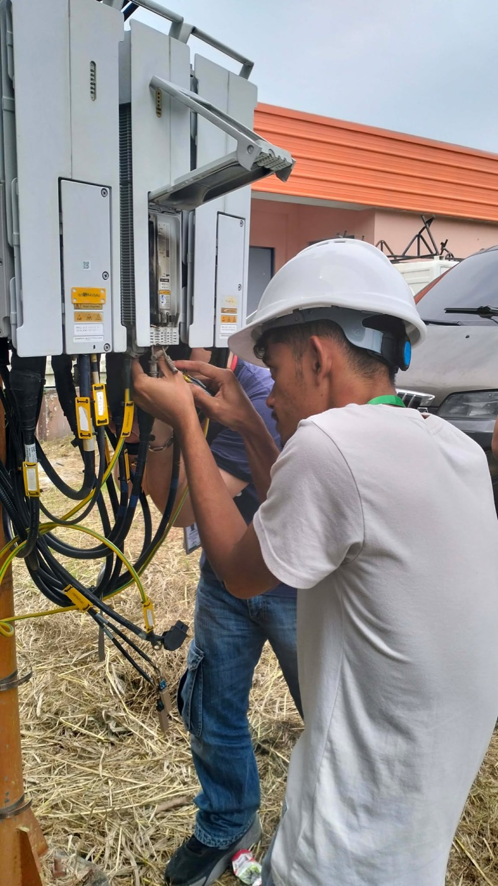
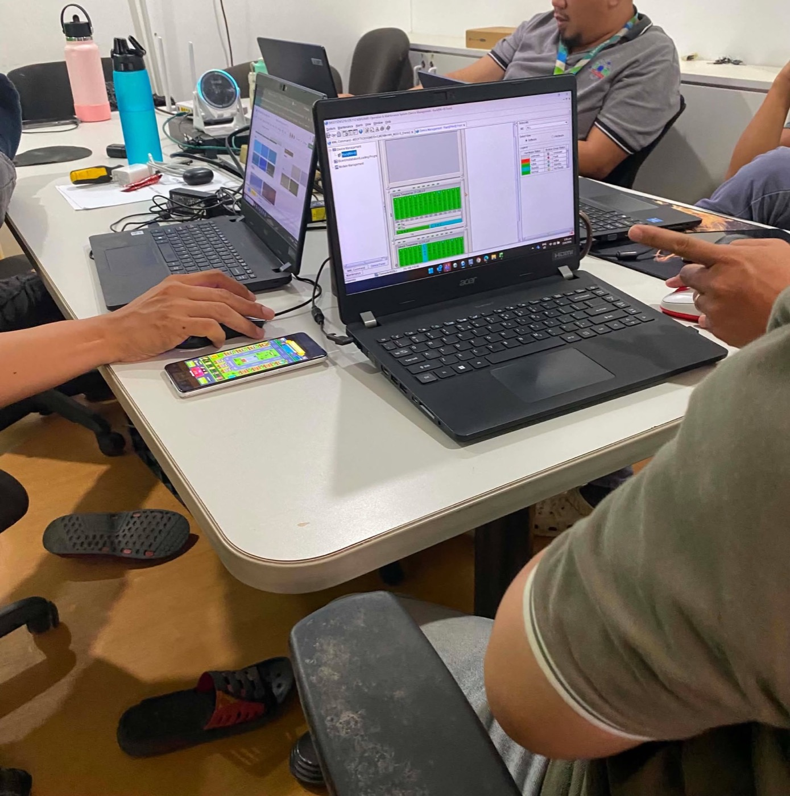
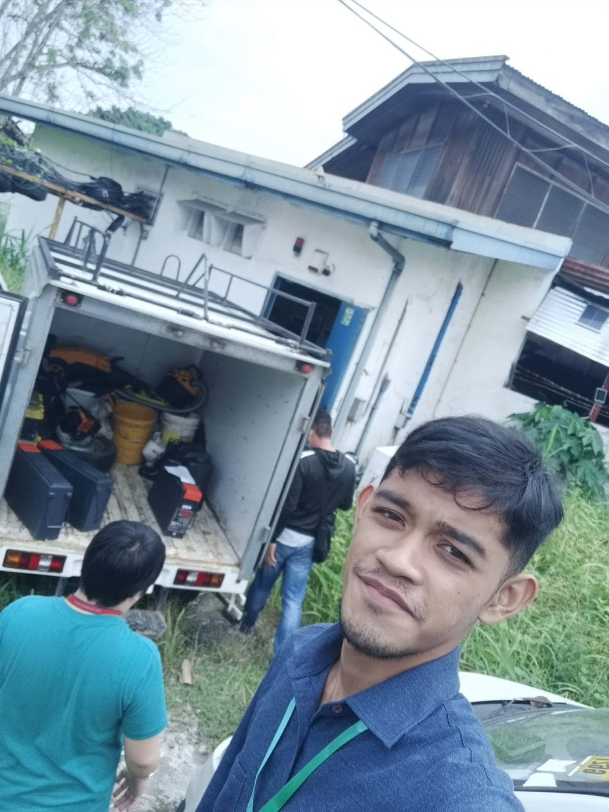

2026
Wireless Engineering Trainee
Smart Communications, Inc. · Smart Wireless Engineering Education Program (SWEEP) · Davao
- Assisted engineers with cell site installation, connecting and terminating feeder and grounding cables on outdoor radio units while following site safety protocols.
- Recorded and analyzed network performance data in Excel, Ookla Insights and CellMapper to support network monitoring.
- Checked rack and board status in network equipment management software to confirm hardware was active and running normally.
- Built HTML pages and AI prompts that made the team’s internal documentation faster to produce and easier to use.
- Worked with engineering teams under deadlines, with close attention to detail and procedure.
- Completed the program and received a Certificate of Completion from Smart Communications.



